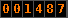
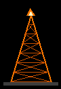
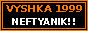

Вы посетитель номер / You are visitor number  Пиши: tema_neft@attelkom.net
Лучше смотреть в Internet Explorer 4 и 800x600. В Netscape таблица едет, извините.
Последнее обновление / Last updated: 25.10.1999
 |
В Ы Ш К А VYSHKA 1999 неофициальная страница / unofficial page |
|
МЕНЮ / MENU >> Главная / Home >> Сезон 1999 + наши песни >> Фото с дерби!!! >> Состав Вышки (members) >> Гостевая книга >> Ссылки / Links (скоро)  ставь нашу кнопку к себе!! put our button on your page |
ПРИВЕТ!!! HELLO TO ALL PEOPLE IN INTERNET!!!
Это неофициальная страница группы болельщиков ВЫШКА. Мы болеем за Нефтяник. Да, в федерации он называется "Нефтчи Нуржан" (Neftchi Nurzhan) с 1993 года, но для нас это НЕФТЯНИК - как с 1958 года, как у наших отцов. Никто не поменяет. This is not official page of group VYSHKA. We are fans of Neftchi Nurzhan but we say only NEFTYANIK because it is real name of club since 1958 and nobody will change it, not federation not nobody. КТО МЫ / WHO WE ARE VYSHKA is guys from 12 microrayon and other yards. Group is founded in spring 1999. We stand on east stand of the stadium. Stadium from 1998 is named NurGaz Stadium but for us is Neftyanik stadium. Sector G, on the top. ПОЧЕМУ "ВЫШКА"? / WHY "DERRICK"? ЧЁРНЫЙ И ОРАНЖЕВЫЙ Black is oil, orange is fire. Tulpar people from Talas call us "Morkhan's herd" because black. So what! Black is OUR colour. ЛЕГЕНДА Vadim Ten - 141 goals!!! My father saw almost all of them. |
Вы посетитель номер / You are visitor number  Пиши: tema_neft@attelkom.net
Лучше смотреть в Internet Explorer 4 и 800x600. В Netscape таблица едет, извините.
Последнее обновление / Last updated: 25.10.1999